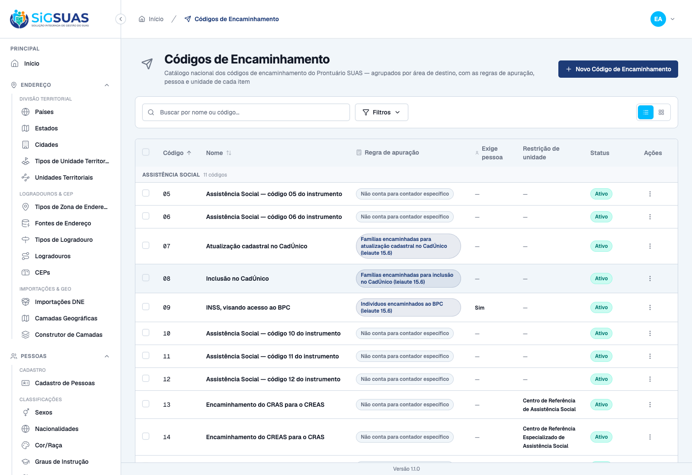
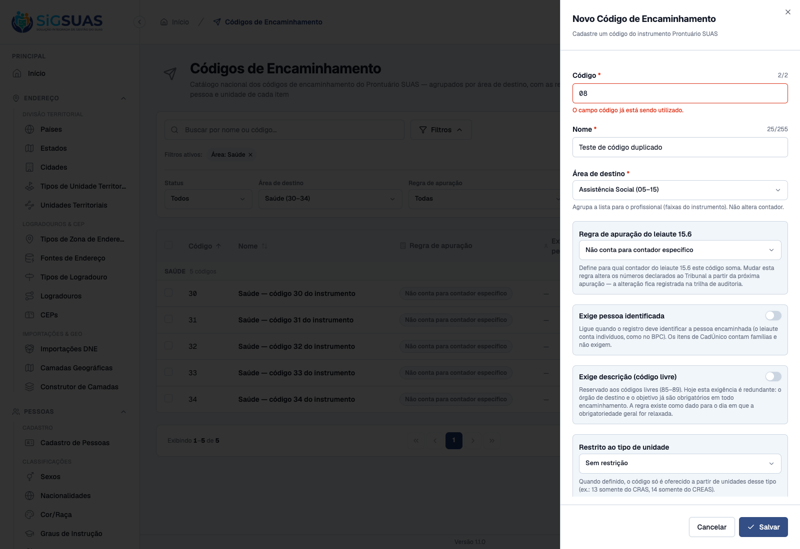
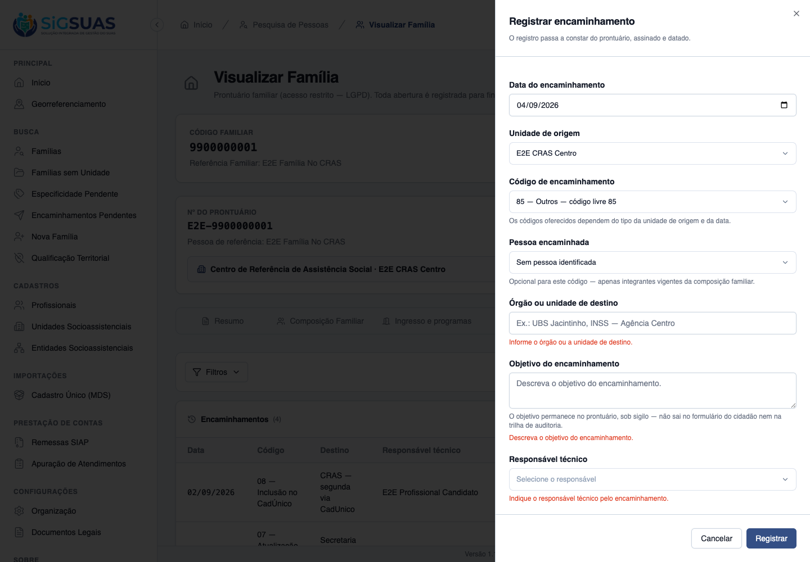
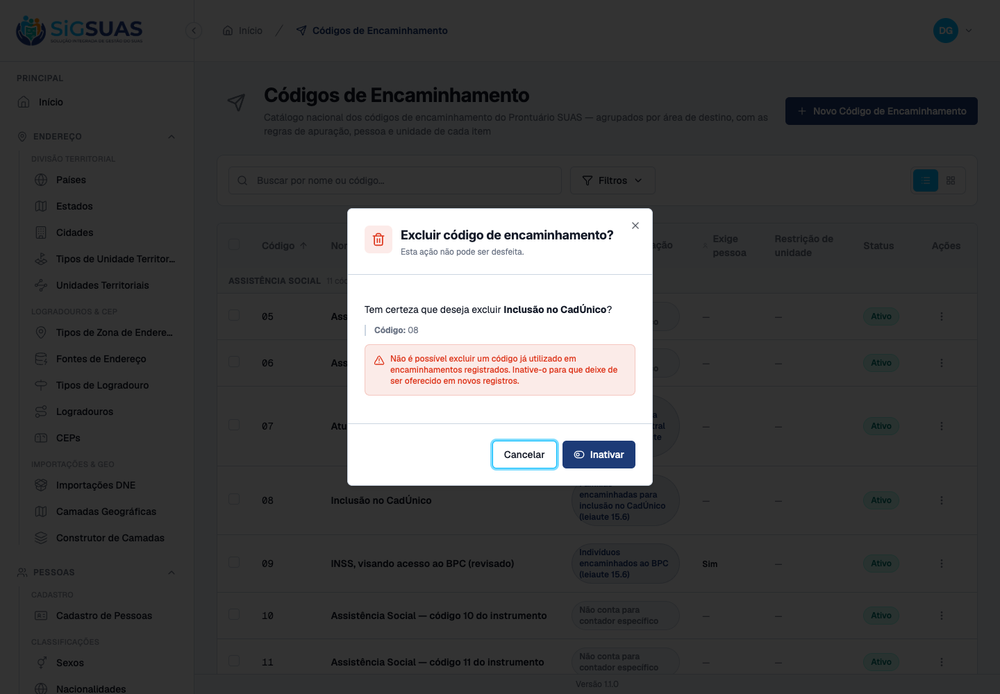
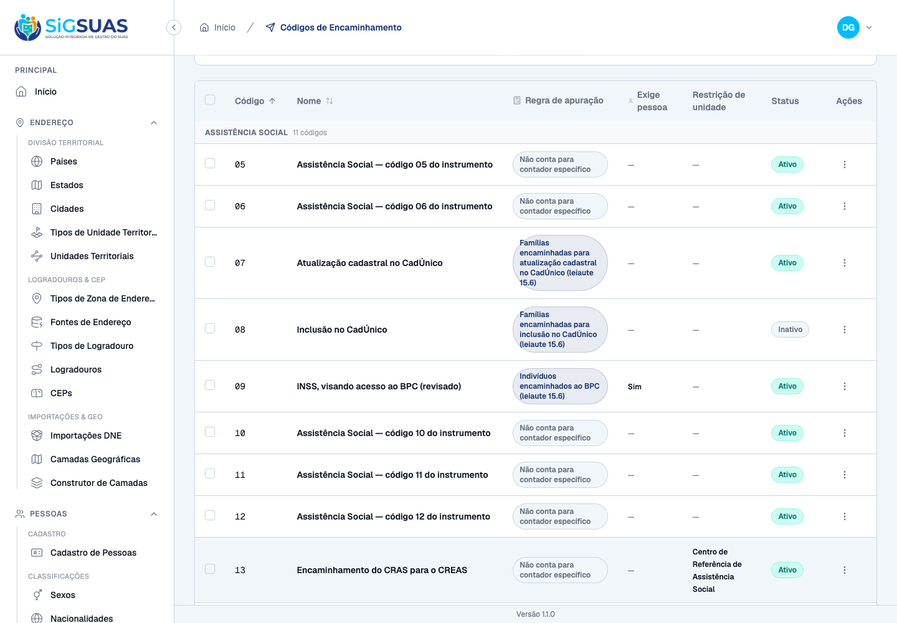
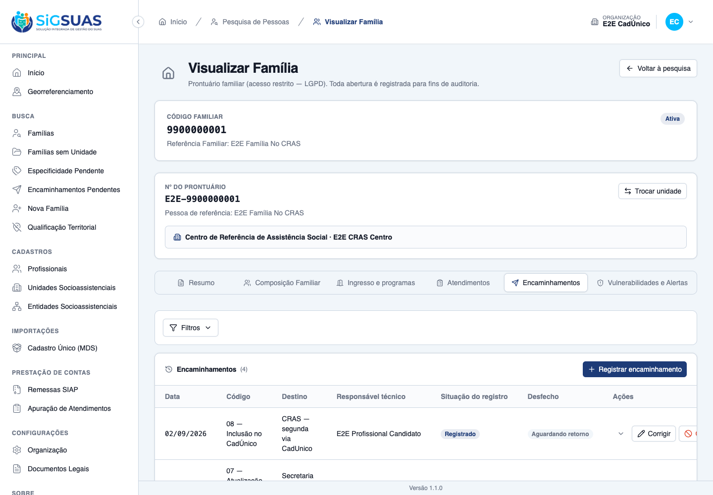
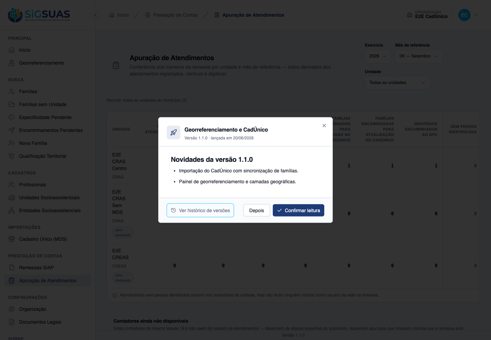
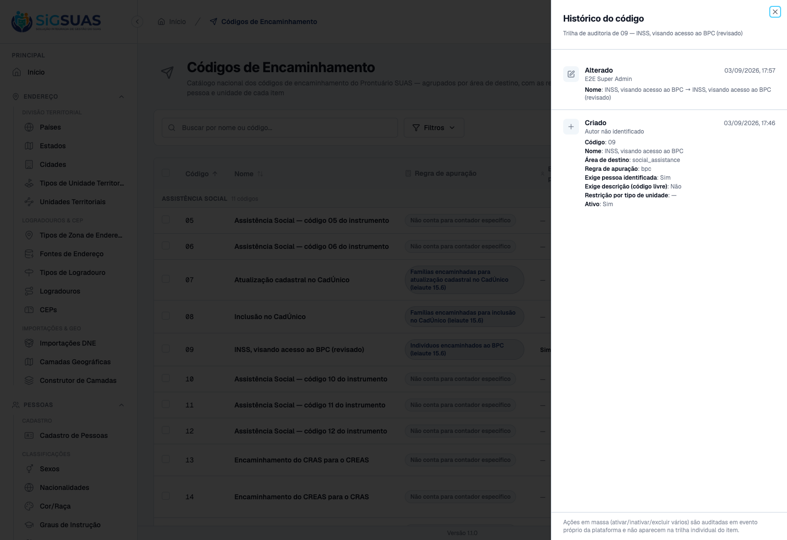
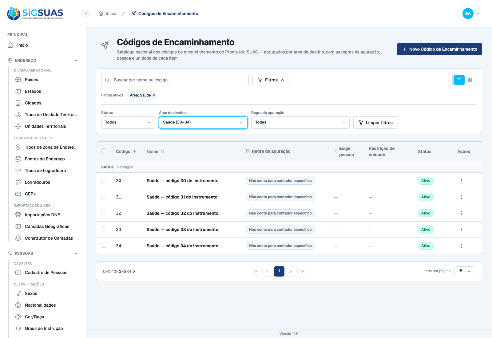

Commits admin/: 561e802 (módulo) · f2b657c (correções da revisão)
Ambiente: API Sail/PostgreSQL em localhost · Painel Global (Vite) :5175 · Painel do Tenant (Vite) :5174 · dados reais (não-mock)
Ferramenta: playwright-cli (Chromium) + Pest 4
Resumo
14 critérios de aceite (CA01–CA12 mais os técnicos CA08b e CA10b). 9 evidenciados por navegador na tela real com dados da API, 3 de forma combinada e 2 por suíte automatizada. Nenhum critério reprovado. A suíte específica da HU fecha com 53 testes e 280 asserções, todos verdes. Complemento de 04/09/2026: os três critérios que a geração original deferiu por dependerem de etapas seguintes da mesma fase — CA07 (tela de registro, #10713), CA08 (tabela de encaminhamentos, #10713) e CA09 (apuração de encaminhamentos, #10715) — foram fechados de ponta a ponta na interface, porque essas etapas já foram entregues.
CA
Critério
Status
CA01
Lista disponível com os códigos do instrumento
ATENDIDO · navegador
CA02
Regra de apuração visível nos três itens que contam
ATENDIDO · navegador
CA03
Item que conta indivíduos exige pessoa
ATENDIDO · navegador
CA04
Item restrito ao tipo de unidade
ATENDIDO · navegador
CA05
Código não é gerado automaticamente e duplicado é recusado
ATENDIDO · navegador
CA06
Nenhum código é criado para a lacuna de 01 a 04
ATENDIDO · navegador
CA07
Códigos livres exigem descrição no registro
ATENDIDO · navegador + automatizado
CA08
Item em uso não é excluído
ATENDIDO · navegador + automatizado
CA08b
Exclusão em massa respeita o uso
ATENDIDO · automatizado
CA09
Item inativado continua no histórico e na apuração
ATENDIDO · navegador
CA10
Município não edita a lista
ATENDIDO · automatizado
CA10b
Escrita negada ao guard client no backend
ATENDIDO · automatizado
CA11
Alteração auditada
ATENDIDO · navegador
CA12
A área de destino agrupa a lista
ATENDIDO · navegador
CA01 — Lista disponível com os códigos do instrumento ATENDIDO · navegador
Critério (Gherkin): Dado que sou Administrador no Painel de Administração Global
Quando eu consultar o cadastro de códigos de encaminhamento
Então vejo os itens da tabela do instrumento, agrupados por área de destino
E os códigos preservam as lacunas entre as faixas, sem renumeração
Como foi testado: Login como Administrador, aceite dos documentos legais e navegação até /app/referral-codes.
Resultado observado:
A lista abre agrupada por área de destino, com o cabeçalho de grupo 'ASSISTÊNCIA SOCIAL — 11 códigos'.
36 códigos semeados, cobrindo as sete áreas do instrumento.
O agrupamento é apresentação: nenhum código é renumerado e a ordenação segue o campo `code`.

ca01-ca06-lista-agrupada.png
CA02 — Regra de apuração visível nos três itens que contam ATENDIDO · navegador
Critério (Gherkin): Dado que estou consultando o cadastro
Quando eu abrir os itens de inclusão no CadÚnico, atualização cadastral e INSS para BPC
Então cada um indica para qual contador do leiaute 15.6 ele conta
E os demais itens não contam para nenhum
Como foi testado: Leitura da coluna Regra de apuração na listagem.
Resultado observado:
07 — 'Famílias encaminhadas para atualização cadastral no CadÚnico (leiaute 15.6)'.
08 — 'Famílias encaminhadas para inclusão no CadÚnico (leiaute 15.6)'.
09 — 'Indivíduos encaminhados ao BPC (leiaute 15.6)'.
Todos os demais exibem 'Não conta para contador específico', em estilo neutro — a distinção é visual, não só textual.
Confirmado no banco: exatamente três códigos têm `remittance_counter` preenchido.
ca01-ca06-lista-agrupada.png
CA03 — Item que conta indivíduos exige pessoa ATENDIDO · navegador
Critério (Gherkin): Dado que estou consultando o item "INSS, visando acesso ao BPC"
Quando eu abrir o detalhe
Então ele indica que o registro exige identificar a pessoa encaminhada
E os itens de CadÚnico não exigem, porque contam famílias
Como foi testado: Leitura da coluna Exige pessoa.
Resultado observado:
O código 09 (BPC) é o único com 'Sim'.
Os códigos 07 e 08 (CadÚnico) exibem '—', coerentes com contarem famílias e não indivíduos.
O texto de ajuda do formulário explicita a razão: 'o leiaute conta indivíduos, como no BPC; os itens de CadÚnico contam famílias e não exigem'.
ca01-ca06-lista-agrupada.png
CA04 — Item restrito ao tipo de unidade ATENDIDO · navegador
Critério (Gherkin): Dado que estou consultando o item "Encaminhamento do CRAS para o CREAS"
Quando eu abrir o detalhe
Então ele indica que só é oferecido a partir de unidade do tipo CRAS
Como foi testado: Leitura da coluna Restrição de unidade nas linhas 13 e 14.
Resultado observado:
13 — 'Centro de Referência de Assistência Social' (CRAS).
14 — 'Centro de Referência Especializado de Assistência Social' (CREAS).
Nenhum outro código tem restrição; a coluna exibe '—'.
A restrição sobrevive à exclusão do tipo de unidade: a relação usa `withTrashed()` e o contrato marca `is_deleted`, para a tela mostrar 'CRAS (excluído)' em vez de afirmar falsamente que não há restrição.
ca01-ca06-lista-agrupada.png
CA05 — Código não é gerado automaticamente e duplicado é recusado ATENDIDO · navegador
Critério (Gherkin): Dado que estou cadastrando um item
Quando eu informar os dados
Então o código é informado por mim
E o sistema recusa código já utilizado
Como foi testado: 'Novo Código de Encaminhamento' → informar código 08 (já existente), nome e área → Salvar.
Resultado observado:
O campo Código é de preenchimento manual, com placeholder 'Ex: 08' — não há geração automática nem sugestão de próximo número.
O backend responde 422 e a mensagem 'O campo código já está sendo utilizado.' aparece no próprio campo, com borda destrutiva.
O formulário permanece aberto com os dados preenchidos; nada é criado.
O formato é validado em duas camadas: máscara de 2 dígitos no front e `regex:/^\d{2}$/` no backend — '5' e 'abc' são recusados antes de virar dado sujo.

ca05-codigo-duplicado-422.png
CA06 — Nenhum código é criado para a lacuna de 01 a 04 ATENDIDO · navegador
Critério (Gherkin): Dado que a tabela recebida começa no código 05
Quando eu consultar o cadastro
Então não existem itens de código 01 a 04
E a ausência é visível, não preenchida por suposição
Como foi testado: Inspeção da listagem ordenada por código e conferência direta no banco.
Resultado observado:
A lista começa em 05. Não há placeholder, marcador de 'faltando' nem numeração contínua.
Consulta ao banco: os 36 códigos são 05–15, 30–34, 40–42, 50–54, 60–61, 70–74 e 85–89 — nenhum 01–04.
As lacunas entre faixas também são preservadas, e o próprio filtro por área as torna explícitas ao rotular 'Saúde (30–34)'.
Teste automatizado assere a ausência de 01–04 por expressão regular, impedindo que uma futura 'correção' preencha a sequência.
ca01-ca06-lista-agrupada.png
CA07 — Códigos livres exigem descrição no registro ATENDIDO · navegador + automatizado
Critério (Gherkin): Dado que um profissional escolhe um dos códigos livres ao registrar um encaminhamento
Quando ele tentar salvar sem informar o órgão de destino e o objetivo
Então o registro não é salvo, conforme a regra do item
Como foi testado: Complemento de 04/09/2026, agora que a tela de registro da #10713 existe: no Painel do Tenant, aba Encaminhamentos do prontuário → Registrar encaminhamento → unidade de origem E2E CRAS Centro → código 85 — Outros — código livre 85 → tentar salvar sem preencher órgão de destino nem objetivo.
Resultado observado:
Os cinco códigos livres são oferecidos no select do registro: <code>85</code> a <code>89</code>, rotulados “Outros — código livre”.
Com o código livre escolhido e os campos vazios, o registro <b>não é salvo</b>: a tela exibe “Informe o órgão ou a unidade de destino.” e “Descreva o objetivo do encaminhamento.”, cada uma no seu campo.
Nada é criado: a contagem de encaminhamentos permanece em 4 antes e depois da tentativa.
Os cinco códigos livres nascem com <code>requires_free_description = true</code> e área <code>free</code>, verificado por teste do seeder.
Observação levada ao PO (RN07a): a exigência é hoje redundante, porque órgão de destino e objetivo já são obrigatórios em todo encaminhamento. A coluna existe para o dia em que a obrigatoriedade geral for relaxada.

ca07-codigo-livre-exige-descricao.png
CA08 — Item em uso não é excluído ATENDIDO · navegador + automatizado
Critério (Gherkin): Dado que o item "Para Conselho Tutelar" já foi usado em encaminhamentos
Quando eu tentar excluí-lo
Então a exclusão é recusada
E o sistema indica que ele pode ser inativado
Como foi testado: Complemento de 04/09/2026, com a tabela referrals já criada pela #10713: no Painel Global, menu de ações do código 08 — Inclusão no CadÚnico (usado por 2 encaminhamentos) → Excluir → confirmar. Complementado pela suíte ReferralCodeUsageTest.
Resultado observado:
A exclusão é <b>recusada</b> e o diálogo passa a exibir a mensagem do backend: “Não é possível excluir um código já utilizado em encaminhamentos registrados. Inative-o para que deixe de ser oferecido em novos registros.”
O botão de confirmação <b>troca de “Excluir” para “Inativar”</b> — o sistema indica o caminho permitido, como o critério pede.
Nada é excluído: o cadastro segue com <b>36 códigos</b> e o 08 permanece com <code>deleted_at = null</code>.
A trava não depende da FK <code>RESTRICT</code>: como a exclusão é soft delete, a constraint não dispararia. É o serviço que fecha a porta.
A resposta 422 orienta a inativar em vez de excluir, preservando o histórico.

ca08-exclusao-recusada-codigo-em-uso.png
CA08b — Exclusão em massa respeita o uso ATENDIDO · automatizado
Critério (Gherkin): Dado que selecionei três itens, um deles já usado em encaminhamentos
Quando eu confirmar a exclusão em massa
Então nenhum dos três é excluído
E o sistema identifica qual está em uso
Como foi testado: Coberto por teste de atomicidade em ReferralCodeUsageTest.
Resultado observado:
A operação é atômica de verdade: com um item em uso, nenhum dos três é excluído.
A resposta devolve `in_use_uuids`, identificando quais bloquearam a operação.
Evidência por cobertura automatizada — ver Anexo.
CA09 — Item inativado continua no histórico e na apuração ATENDIDO · navegador
Critério (Gherkin): Dado que inativei um item já usado
Quando eu consultar o histórico e a apuração do período em que ele foi usado
Então os encaminhamentos continuam listados e continuam contando
Como foi testado: Complemento de 04/09/2026, agora que a apuração conta encaminhamentos (#10715): inativar o código 08 pelo Painel Global — usando o próprio botão “Inativar” oferecido pela recusa do CA08 — e em seguida consultar, no Painel do Tenant, a aba Encaminhamentos do prontuário e a tela de Apuração de Atendimentos do período.
Resultado observado:
Inativado, o código 08 continua no cadastro com <code>deleted_at = null</code> — inativação não é exclusão.
<b>Histórico</b> — os dois encaminhamentos de 02/09/2026 registrados com “08 — Inclusão no CadÚnico” continuam listados na aba de Encaminhamentos da família, com situação Registrado.
<b>Apuração</b> — no recorte 09/2026, o E2E CRAS Centro mantém <b>Famílias encaminhadas para inclusão no CadÚnico = 1</b>: o código inativado <b>continua contando</b> no período em que foi usado.
O Model não tem Global Scope de <code>is_active</code> — teste assere que os únicos escopos globais são os de soft delete. É isso que garante que inativar um código não apague retroativamente o passado.
Ao final da evidência o código 08 foi reativado, restaurando os 36 códigos ativos.

ca09-codigo-08-inativado.png

ca09-historico-mantem-codigo-inativado.png

ca09-apuracao-conta-codigo-inativado.png
CA10 — Município não edita a lista ATENDIDO · automatizado
Critério (Gherkin): Dado que sou Master no Painel do Tenant
Quando eu procurar onde alterar os códigos de encaminhamento
Então a ação não existe para mim
Como foi testado: Evidenciado pela suíte, em duas camadas. A captura da tela do Operacional Global não foi feita: o usuário citado no guia de execução não está semeado neste banco de desenvolvimento. Registrado com transparência em vez de substituído por evidência aproximada.
Resultado observado:
Backend: `referral-codes` está em `CLIENT_READ_ONLY_RESOURCES`, então o guard `client` recebe apenas leitura. Teste nominal por papel confirma que `CLIENT_OPERADOR` e `CLIENT_ADMIN` não possuem `store`, `update`, `destroy`, `bulk-*` — inclusive `bulk-destroy`, que escapa da regra genérica por terminar em '-destroy' e só é fechado por esse array.
Frontend: todas as ações de escrita são gated por `v-can` com os nomes exatos das abilities do controller, e a rota exige `referral-codes.index`.
Prova negativa executada durante a revisão: removendo `referral-codes` de `CLIENT_READ_ONLY_RESOURCES`, o teste fica vermelho — o gate é real, não decorativo.
Evidência por cobertura automatizada — ver Anexo.
CA10b — Escrita negada ao guard client no backend ATENDIDO · automatizado
Critério (Gherkin): Dado que estou autenticado com um token do guard `client`
Quando eu chamar POST /api/referral-codes
Então a requisição é recusada pela autenticação (401)
E nenhum registro é criado
Como foi testado: Coberto por teste de feature em ReferralCodeControllerTest.
Resultado observado:
As rotas de escrita vivem em `manager.php`, sob o guard `manager`. Um token `client` recebe 401 antes de qualquer autorização.
A leitura (`index`/`show`) é compartilhada em `shared.php`, porque o tenant precisa do catálogo para popular o select do registro na #10713.
O Operacional Global recebe 403 na escrita — autenticado, mas sem a ability.
Evidência por cobertura automatizada — ver Anexo.
CA11 — Alteração auditada ATENDIDO · navegador
Critério (Gherkin): Dado que alterei a regra de apuração de um item
Quando eu consultar a trilha de auditoria
Então a alteração consta, com autor e data
Como foi testado: Edição unitária do código 09 (alteração do nome) → menu de ações → 'Ver histórico'. A edição precisa ser unitária: ações em massa são auditadas em evento próprio, sem subject, e por isso não aparecem na trilha do item.
Resultado observado:
A entrada 'Alterado' registra autor ('E2E Super Admin'), data e hora, e o de/para do campo: 'INSS, visando acesso ao BPC → INSS, visando acesso ao BPC (revisado)'.
A entrada 'Criado' preserva o estado inicial completo do item.
O de/para vem de `attribute_changes`, que é onde o spatie/laravel-activitylog 5.0.0 grava as mudanças da trait — e não de `properties`, que guarda apenas os logs manuais.
O rodapé do painel avisa, de forma permanente, que ações em massa não aparecem na trilha individual — inclusive quando a trilha tem eventos, que é justamente quando a ausência confunde.

ca11-trilha-edicao-unitaria.png
CA12 — A área de destino agrupa a lista ATENDIDO · navegador
Critério (Gherkin): Dado que o cadastro tem itens de sete áreas de destino
Quando eu filtrar pela área "Saúde"
Então vejo apenas os itens da faixa 30 a 34
Como foi testado: Filtros → Área de destino → 'Saúde (30–34)'.
Resultado observado:
A lista passa a exibir somente o grupo 'SAÚDE — 5 códigos', com os itens 30, 31, 32, 33 e 34.
O filtro é do backend, não filtragem local: a requisição observada é `GET /api/referral-codes?page=1&per_page=15&filter[destination_area]=health&sort=code`.
As opções do filtro rotulam as faixas ('Saúde (30–34)'), o que torna as lacunas do instrumento explícitas já na escolha.

ca12-filtro-area-saude.png
Observações e ressalvas
Complemento de 04/09/2026 — os três critérios deferidos foram fechados
A geração original, de 03/09/2026, deferiu três critérios por dependerem de artefatos que ainda não existiam: CA07 exigia a tela de registro do encaminhamento, CA08 exigia a tabela de encaminhamentos para haver consumidor real, e a metade da apuração do CA09 exigia que os contadores de encaminhamento existissem. Os três eram anexo tardio previsto na própria spec, não lacuna de implementação.
As três dependências já foram entregues — a tela e a tabela pela HU #10713, e os contadores pela #10715, ambas da mesma fase F2. O registro de consumidores do serviço de uso já traz a entrada referrals, e o próprio código anota que “o CA08 da #10712 está fechado EM PRODUÇÃO por esta linha”. Os três critérios foram então exercidos na interface, em comportamento de produção, com o ambiente restaurado ao final: o código 08 voltou a ativo e nenhum encaminhamento foi criado ou removido.
✓ it filters by remittance counter and by restricted unit type uuid (… 0.04s
✓ it rejects filter values outside the enums with 422 0.03s
✓ it blocks write without permission 0.03s
✓ it gives the admin_operador read-only access — every write is 403 (… 1.84s
✓ it lets the ADMIN role exercise all eight abilities end to end 1.49s
✓ it rejects client-guard tokens on every write route with 401, creat… 0.04s
✓ it keeps the shared read alive for the client guard — the tenant se… 0.03s
PASS Tests\Feature\Api\ReferralCodeUsageTest
✓ it refuses to delete a code in use with 422, guiding deactivation (… 0.06s
✓ it still soft deletes a code NOT referenced by any consumer (CA08) 0.03s
✓ it deletes normally while CONSUMERS is empty — referrals does not e… 0.03s
✓ it ignores a registered consumer whose table does not exist yet (Sc… 0.04s
✓ it bulk destroy is ATOMIC: one item in use blocks all three and is… 0.05s
✓ it bulk destroys unused codes, logging the bulk event with author (… 0.03s
PASS Tests\Feature\Seeders\ReferralCodeSeederTest
✓ it seeds the seven ranges of the instrument, zero-padded, never fil… 0.06s
✓ it groups each range under its destination area (RN03/CA12) 0.06s
✓ it marks EXACTLY three items with a remittance counter — 07, 08 and… 0.07s
✓ it marks EXACTLY one item requiring an identified person — the BPC… 0.08s
✓ it marks EXACTLY two items restricted by unit type — 13 to CRAS, 14… 0.10s
✓ it marks the five free codes 85–89 with the free area and the descr… 0.08s
✓ it is idempotent — running the seeder twice does not duplicate nor… 0.10s
✓ it guarantees the social unit types when run standalone (RN06 depen… 0.08s
✓ it resolves CRAS/CREAS ids even when the unit types are soft-delete… 0.08s
Tests: 53 passed (280 assertions)
Duration: 7.64s